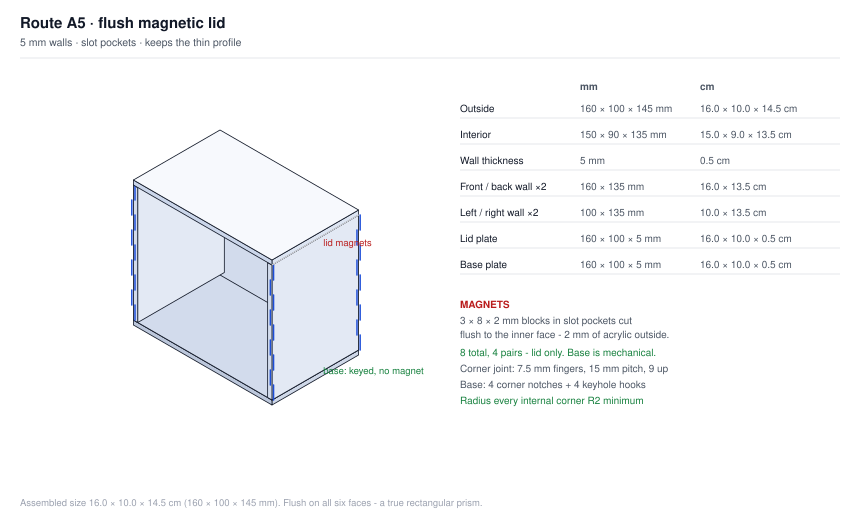
Thin, glassy, cheaper. The magnet pocket is a 3 × 8 mm slot cut flush to the wall's inner face, so all 2 mm of acrylic sits on the outside where it matters. The base is keyed and hooked, not magnetic.
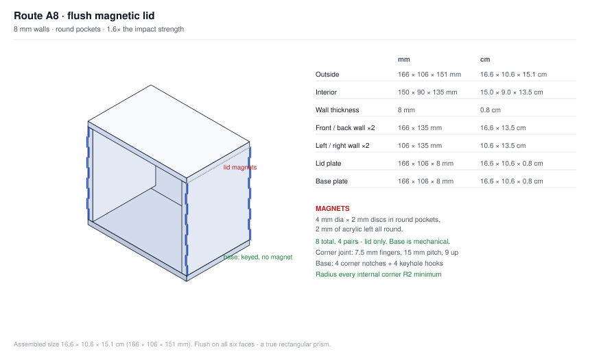
Chunky, stronger, about $2.50 more. Ordinary round pockets with 2 mm of acrylic on both sides of the magnet, and roughly 2.5× the impact energy before it cracks. Same mechanical base.
| Route A5 | Route A8 | |
|---|---|---|
| Wall thickness | 5 mm (0.5 cm) | 8 mm (0.8 cm) |
| Magnet pocket | 3 × 8 mm slot, flush to inner face | 4 mm dia round, centred |
| Acrylic around the magnet | 2.0 mm, outside only | 2.0 mm on both sides |
| Magnets — lid only | 8 × 3 × 8 × 2 mm blocks | 8 × 4 mm dia × 2 mm discs |
| Base joint | Mechanical: 4 corner notches + 4 keyhole hooks. No magnet, no glue. | |
| Outside size | 16.0 × 10.0 × 14.5 cm 160 × 100 × 145 mm |
16.6 × 10.6 × 15.1 cm 166 × 106 × 151 mm |
| Interior | 15.0 × 9.0 × 13.5 cm (150 × 90 × 135 mm) — identical on both | |
| Margin around the box | 10 mm (1.0 cm) per side | 13 mm (1.3 cm) per side |
| Impact strength | baseline | ≈ 2.5× |
| Material cost per case | baseline | ≈ +$2.50 |
| Look | thin, glassy, display case | chunky, instrument case |
| Best for | a shelf, handled by you | shipping, handling, posting |
A flush lid is a plain plate resting on the walls' rim, so the magnets have to sit vertically in the rim — and the rim is only as wide as the wall is thick.
| Wall | Magnet | Acrylic each side | Verdict |
|---|---|---|---|
| 5 mm | 4 mm | 0.5 mm | cracks |
| 5 mm | 3 mm | 1.0 mm | risky |
| 5 mm | 3 × 8 mm slot flush to the inner face | 2.0 mm outboard | A5 — works |
| 6 mm | 3 mm | 1.5 mm | acceptable |
| 8 mm | 4 mm | 2.0 mm | A8 — comfortable |
A5 gets away with 5 mm by cutting the pocket as a slot flush with the wall's inner face, so the acrylic is all on the outside. The trade is that the slot is open on the inside — hidden by the booster box, but it is a notch in the inner top edge. A8 just uses ordinary round pockets.
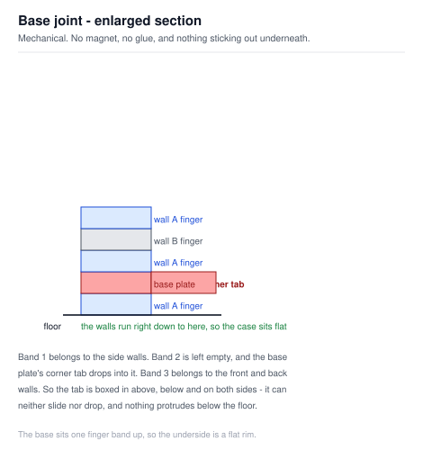
A flat base plate can only carry features in its own plane, and a wall can only carry features in its plane. That asymmetry is what makes a glue-free, magnet-free floor possible.
| Feature | Qty | What it stops |
|---|---|---|
| Corner notches, t × t | 4 | The base sliding sideways or rotating |
| Keyhole slots | 4 | The base dropping out |
| The walls sitting on it | — | The base rising |
Each front and back wall carries two L-shaped hooks cut from its own bottom edge: a 9 mm neck with a 26 mm head. The hook drops through a keyhole slot that is 26 mm wide at the entry and only 9 mm wide where the neck ends up, so the head finishes under solid acrylic. The wall's slide is the assembly motion.
The head sits 3 mm below the base plate, flush with a 3 mm felt pad, so the case still sits dead flat.
This is the bit that makes the corners and the base work in the same motion. I tested both options:
| Wall motion | First corner | Second corner |
|---|---|---|
| Slide along the wall's own length | meshes | jams solid part-way |
| Slide across the wall's own face | meshes | meshes at the same moment |
A wall sliding along its length runs its material into the far wall's fingers part-way through the travel — it cannot reach the second corner. Sliding across its own face has no sweep collision at all, so both corners click home in one push. That same push drives the two base hooks under the base plate. The whole assembly is two pushes.
This is exactly why the foam matters. When the lid comes off, the foam cradle
still holds the box. You lose a lid, not the contents.
If you truly need the lid to stay on through a drop it has to be
mechanically retained — a tongue engaging a lip inside the
walls — but then the case takes the whole impact and cracks instead. A lid
that pops off is a lid that releases energy.
Test it rather than trusting the numbers. Drop a prototype
1 m onto concrete in all six orientations.
Eight steps. No glue, no fasteners, no tools beyond a drill for the eight magnet pockets. Two of the eight steps are the whole assembly — each front or back wall goes in with a single straight push, and both its corners and both its base hooks engage in that one move.
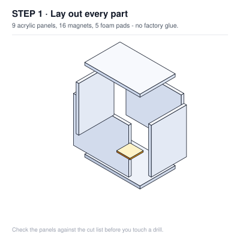
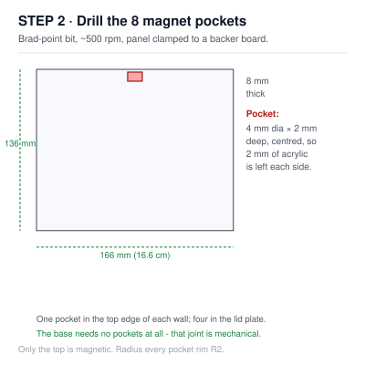
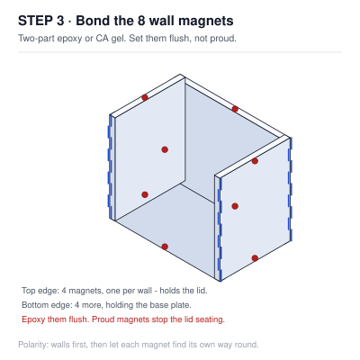
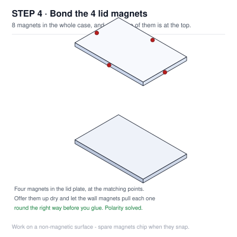
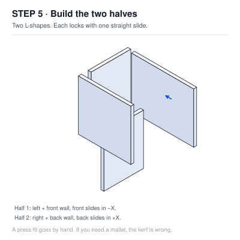
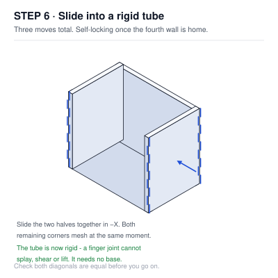
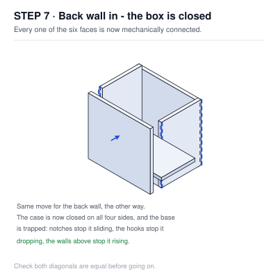
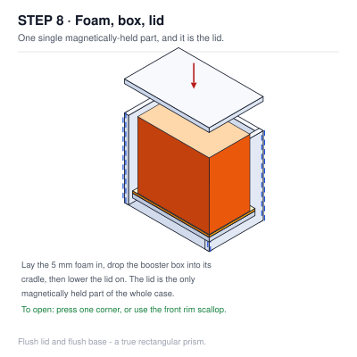
Full specification, cut lists, dimensions in mm and cm, and the drop analysis: ROUTES.md. The other self-assembly options are in VARIANTS.md.